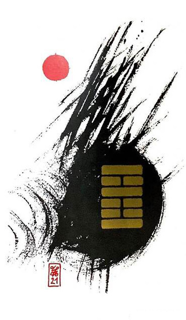

화뢰서합 (씹을 서,다물 합)
평괘 10
장애물을 제거하여 상하의 턱을 합한다
굳세지 않으면 괴로운 일에 시달린다실타래가 잔뜩 엉켜 있는~음식물이 입안에 가득 쌓여 있는 상황을 표현한 그림해결해야 할 일 많다
꽉물다.씹다.방해물.스트레스.마음의 짐.민감.격렬, 홧병.터널구간.고난.위기.
연애운
부담감.답답함
사업운
내부적인 갈등 방해물 정리 시급.직접 해결
속마음
썸부담스럽고 답답한 마음
1년 이상꾹꾹 참고 있는 폭발 직전의 마음
이별 후해결할 일이 있다고 생각하며 답답해 하는 마음
솔로연애운
새로운 이성 생길 확률 낮다
건강운
신경성 질환이면 오래 간다. 폭음.폭식 특히 주의